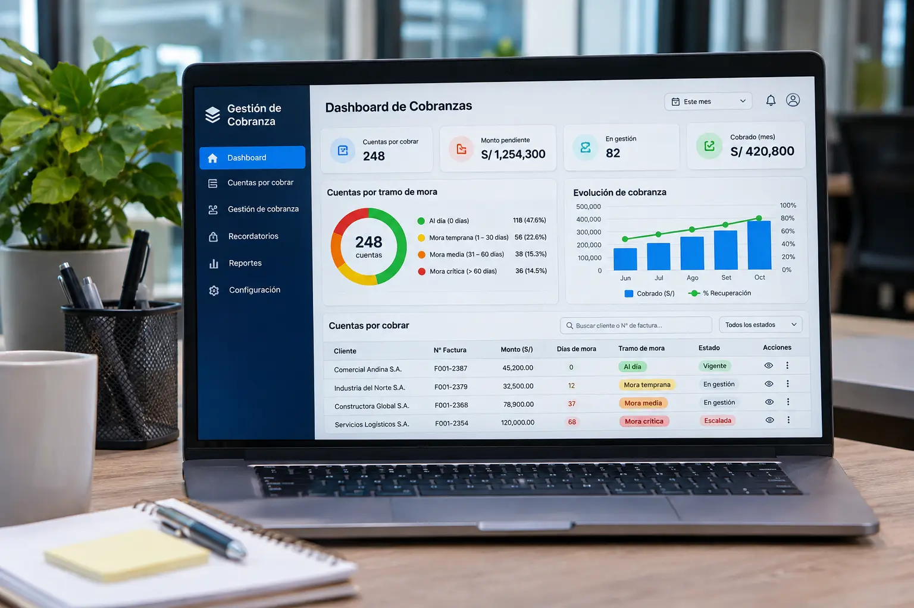

Sistema de cobranza para empresas: qué es y cómo elegir uno
Desde una planilla ordenada hasta un software especializado: conoce los tipos de sistemas de cobranza que existen y cómo saber cuál necesita tu empresa.

¿Qué es un sistema de cobranza y para qué sirve?
En Igmacob Chile trabajamos a diario con empresas que gestionan su cartera morosa de maneras muy distintas: algunas con una simple planilla de Excel, otras con un software especializado, y otras con un módulo integrado dentro de su ERP. Todas estas son, en el fondo, un sistema de cobranza: el método que una empresa usa para registrar sus cuentas por cobrar vencidas, dar seguimiento a cada caso y coordinar las acciones necesarias para recuperar el dinero.
Un buen sistema de cobranza no es un lujo tecnológico: es lo que determina si tu empresa sabe, en cualquier momento, cuánto le deben, quién lo debe, hace cuánto tiempo, y qué gestión se ha hecho al respecto. Sin esa visibilidad, la cobranza se vuelve reactiva y desordenada.
Tipos de sistemas de cobranza
No todos los sistemas de cobranza son iguales ni todas las empresas necesitan el mismo nivel de sofisticación. Estos son los tres niveles más comunes:
- Planillas y herramientas básicas: una planilla de Excel o Google Sheets bien estructurada, con columnas de fecha de vencimiento, monto, contacto y estado de gestión. Funciona para carteras pequeñas, pero se vuelve inmanejable cuando el volumen crece o participa más de una persona.
- Software especializado de cobranza: plataformas diseñadas específicamente para gestionar cartera morosa, con automatización de recordatorios, segmentación por tramos de mora y reportería integrada. Permiten escalar sin perder control.
- Módulos de cobranza dentro de un ERP: para empresas que ya usan un sistema de gestión integral (contabilidad, inventario, ventas), algunos ERP incluyen o permiten integrar un módulo de cobranza que conecta directamente con la facturación y las cuentas por cobrar.
La elección correcta depende del volumen de tu cartera, la cantidad de personas involucradas en la gestión y cuánto estás dispuesto a invertir en tecnología versus en horas de trabajo manual.
Qué debe tener un buen sistema de cobranza
Más allá del formato que elijas, hay funciones que cualquier sistema de cobranza efectivo debería cubrir:
- Segmentación por tramos de mora: que permita clasificar la cartera según antigüedad y aplicar una gestión distinta a cada tramo.
- Automatización de recordatorios: envío programado de avisos por WhatsApp, email o SMS sin depender de que alguien lo haga manualmente cada día.
- Registro completo de cada gestión: cada llamada, mensaje o acuerdo debe quedar documentado, tanto para hacer seguimiento como para respaldar una eventual escalada a cobranza judicial.
- Reportería con indicadores claros: que permita medir tasa de contactabilidad, tasa de recuperación y otros datos clave sin tener que armar reportes manuales.
- Capacidad de escalar sin perder historial: si un caso necesita pasar de gestión preventiva a cobranza prejudicial intensiva, el sistema debe mantener todo el registro previo disponible.
¿Tu sistema actual no cubre varios de estos puntos? Escríbenos por WhatsApp y revisamos juntos qué te conviene.
Sistema propio vs. externalizar la cobranza
Implementar y mantener un sistema de cobranza propio tiene sentido cuando el volumen de cartera lo justifica: suficientes casos activos como para que la inversión en software y en el tiempo de un equipo interno se pague sola con lo que se recupera.
Pero cuando una empresa no tiene el volumen, el equipo o el tiempo para operar un sistema día a día, externalizar la gestión suele ser más eficiente que invertir en tecnología que después nadie usa de forma consistente. Revisa nuestra guía de outsourcing de cobranza para entender cuándo conviene cada camino.
Una buena empresa de cobranza externa, de hecho, ya gestiona tu cartera con sus propios procesos y herramientas internas: tú obtienes los beneficios de una gestión ordenada sin tener que comprar, implementar ni mantener ningún software por tu cuenta.
Cómo apoya Igmacob Chile
En Igmacob Chile gestionamos tu cartera con procesos internos ordenados —segmentación por tramos de mora, recordatorios programados y seguimiento riguroso de cada caso— y te entregamos reportería periódica con el estado de tus cuentas, sin que tu empresa tenga que comprar ni implementar ningún sistema propio.
Si quieres saber cómo se vería tu cartera gestionada con un sistema ordenado, contáctanos. Evaluamos tu caso sin costo.
Hablar con un ejecutivo ahoraPreguntas frecuentes
Es la herramienta —desde una planilla ordenada hasta un software especializado o un módulo de ERP— que una empresa usa para registrar, dar seguimiento y gestionar el cobro de sus cuentas por cobrar vencidas.
Un sistema de cobranza es el concepto general: cualquier método, manual o automatizado, usado para organizar la gestión de cobro. Un software de cobranza es un sistema específico, con tecnología dedicada para automatizar recordatorios, segmentar cartera y generar reportes.
Segmentación de cartera por tramos de mora, automatización de recordatorios, registro de cada gestión, reportería con indicadores claros y la posibilidad de escalar casos a cobranza prejudicial o judicial sin perder el historial.
Depende del volumen de cartera y los recursos internos. Un sistema propio tiene sentido cuando hay volumen suficiente para justificar la inversión; externalizar conviene cuando la empresa no tiene equipo ni tiempo para operar el sistema día a día.
No. El sistema organiza y automatiza tareas repetitivas, pero la negociación con el deudor, especialmente en casos complejos, sigue requiriendo la intervención de un ejecutivo capacitado.